ООП Часть 1 в Dart
Объектно-Ориентированное Программирование
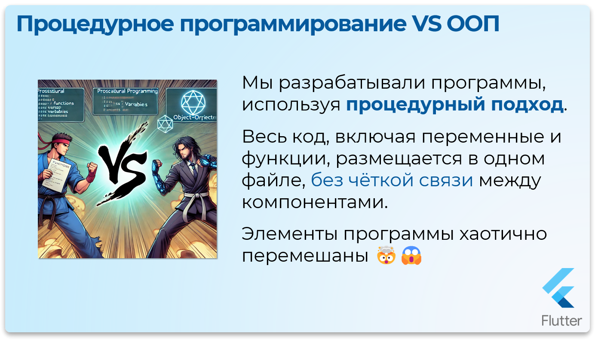
До настоящего момента мы разрабатывали программы, используя процедурный подход. В рамках данного подхода весь код, включая переменные и функции, размещается в одном файле, без чёткой структурной связи между его компонентами. В результате создаётся монолитная структура, где различные элементы программы хаотично смешаны.
Основные характеристики процедурного подхода:
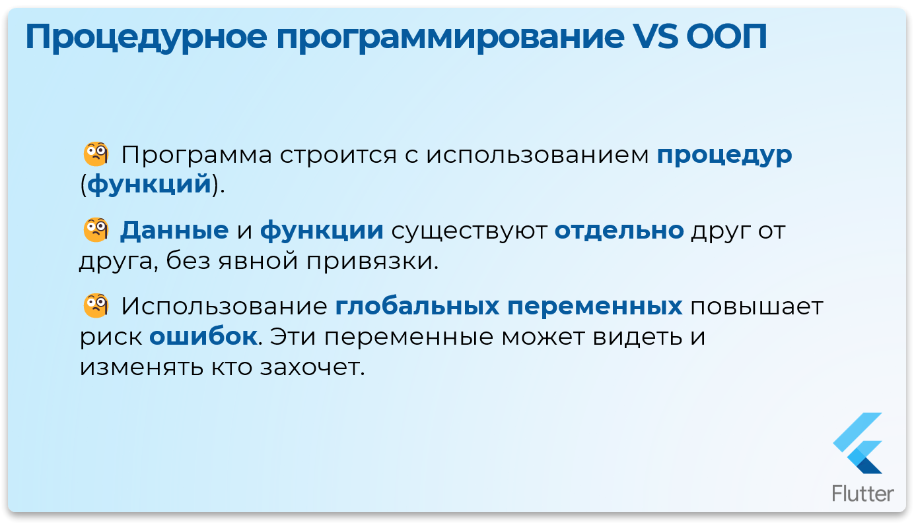
- Программа строится с использованием
процедур(функций) как ключевых структурных элементов. - Данные и функции существуют
отдельно друг от друга, без явной привязки. - Использование
глобальных переменныхдля хранения данных,повышает риск ошибок: такие переменные доступны для просмотра и изменения любым элементам программы, что затрудняет контроль и отладку, потому что эти переменные может видеть и изменять кто хочет 🤨
Рассмотрим пример программы в процедурном стиле и выделим её ограничения и проблемы
Dart - Процедурный подход


void main() {
String playerName = "Геральт из Ривии";
int playerHp = 100;
int playerAttack = 20;
int playerDefence = 10;
String monsterName = "Леший из Лихолесья";
int monsterHp = 50;
int monsterAttack = 12;
int monsterDefence = 8;
/// Функция, с помощью которой игрок наносит урон монстру.
void playerDealsDamage() {
int damage = playerAttack - monsterDefence;
if (damage < 0) damage = 0;
monsterHp -= damage;
if (monsterHp < 0) {
print("Монстр проиграл");
return;
}
print("Игрок наносит монстру $damage урона");
print("У монстра осталось $monsterHp HP");
}
/// Функция, с помощью которой монстр наносит урон игроку.
void monsterDealsDamage() {
int damage = monsterAttack - playerDefence;
if (damage < 0) damage = 0;
playerHp -= damage;
print("Монстр наносит игроку $damage урона");
print("У игрока осталось $playerHp HP");
}
/// Функция повышения уровня игрока.
void levelUp() {
print("Поздравляем! Уровень повышен! Ваши статы усилены!");
playerHp += 10;
playerAttack += 5;
playerDefence += 2;
}
/// Функция для отображения текущих характеристик игрока.
showPlayerStats() {
print("Имя игрока: $playerName");
print("Здоровье игрока: $playerHp");
print("Атака игрока: $playerAttack");
print("Защита игрока: $playerDefence");
}
/// Функция для отображения текущих характеристик монстра.
showMonsterStats() {
print("Имя монстра: $monsterName");
print("Здоровье монстра: $monsterHp");
print("Атака монстра: $monsterAttack");
print("Защита монстра: $monsterDefence");
}
// Выпускаем кракена — последовательность ходов
playerDealsDamage();
playerDealsDamage();
monsterDealsDamage();
playerDealsDamage();
playerDealsDamage();
playerDealsDamage();
levelUp();
showPlayerStats();
}Проблемы процедурного подхода
На данном этапе всё кажется упорядоченным, однако попробуем добавить ещё одного монстра, похожего на существующего. Это приведёт к необходимости создавать дополнительные переменные для нового монстра, а также писать отдельные функции, "связанные" с ним.
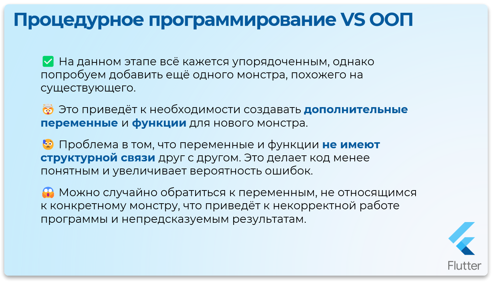
Проблема заключается в том, что эти переменные и функции не имеют структурной связи друг с другом.
Это делает код менее понятным и увеличивает вероятность ошибок.
Например, можно случайно обратиться к переменным, не относящимся к конкретному монстру, что приведёт к некорректной работе программы и непредсказуемым результатам.
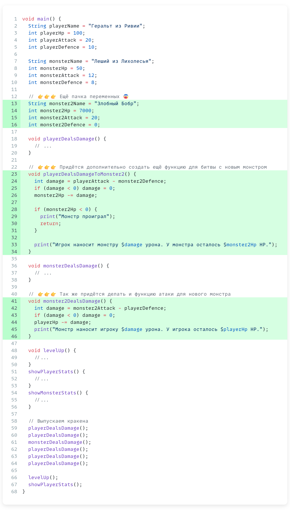
Dart - Проблема с множественными монстрами
void main() {
String playerName = "Геральт из Ривии";
int playerHp = 100;
int playerAttack = 20;
int playerDefence = 10;
String monsterName = "Леший из Лихолесья";
int monsterHp = 50;
int monsterAttack = 12;
int monsterDefence = 8;
// 👉👉👉 Ещё пачка переменных 😨
String monster2Name = "Злобный Бобр";
int monster2Hp = 7000;
int monster2Attack = 20;
int monster2Defence = 0;
void playerDealsDamage() {
// ...
}
// 👉👉👉 Придётся дополнительно создать ещё функцию для битвы с новым монстром
void playerDealsDamageToMonster2() {
int damage = playerAttack - monster2Defence;
if (damage < 0) damage = 0;
monster2Hp -= damage;
if (monster2Hp < 0) {
print("Монстр проиграл");
return;
}
print("Игрок наносит монстру $damage урона. У монстра осталось $monster2Hp HP.");
}
void monsterDealsDamage() {
// ...
}
// 👉👉👉 Так же придётся делать и функцию атаки для нового монстра
void monster2DealsDamage() {
int damage = monster2Attack - playerDefence;
if (damage < 0) damage = 0;
playerHp -= damage;
print("Монстр наносит игроку $damage урона. У игрока осталось $playerHp HP.");
}
void levelUp() {
//...
}
showPlayerStats() {
//...
}
showMonsterStats() {
//...
}
// Выпускаем кракена
playerDealsDamage();
playerDealsDamage();
monsterDealsDamage();
playerDealsDamage();
playerDealsDamage();
playerDealsDamage();
levelUp();
showPlayerStats();
}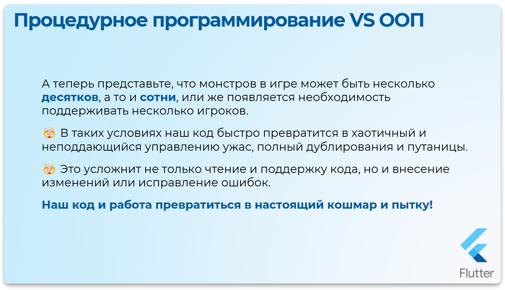
А теперь представьте, что монстров в игре может быть несколько десятков или сотен, или же появляется необходимость поддерживать несколько игроков. В таких условиях наш код быстро превратится в хаотичный и неподдающийся управлению массив, полный дублирования и путаницы. Это усложнит не только чтение и поддержку кода, но и внесение изменений или исправление ошибок.
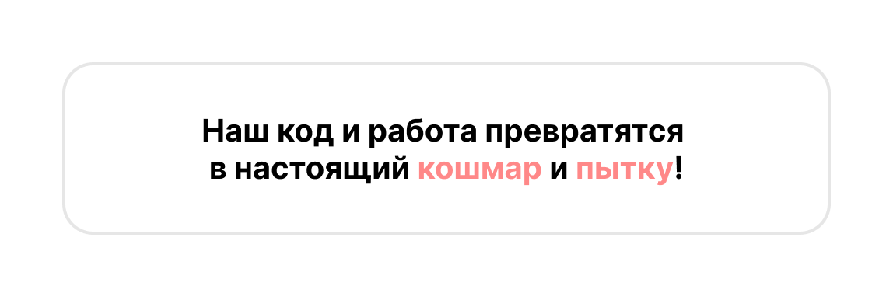
Как справиться с подобной ситуацией? Решение заключается в использовании другой парадигмы программирования, известной как Объектно-Ориентированное Программирование (ООП). Этот подход помогает структурировать код, связывая данные и функциональность в единые логические блоки.
Введение в ООП
Как справиться с подобной ситуацией? Решение заключается в использовании другой парадигмы программирования, известной как Объектно-Ориентированное Программирование (ООП). Этот подход помогает структурировать код, связывая данные и функциональность в единые логические блоки.
Давайте сразу преобразуем наш пример в стиле ООП
Dart - Первый класс
class Character {
// Свойства класса
String name = "";
int hp = 1;
int attack = 1;
int defence = 1;
// Конструктор
Character(String name, int hp, int attack, int defence) {
this.name = name;
this.hp = hp;
this.attack = attack;
this.defence = defence;
}
}
void main() {
}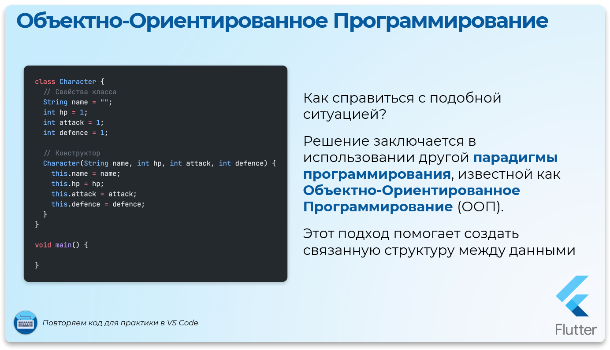
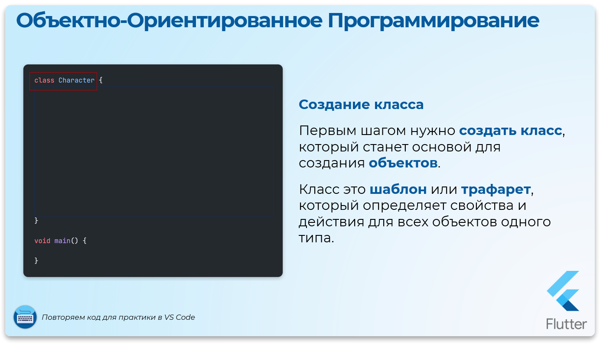
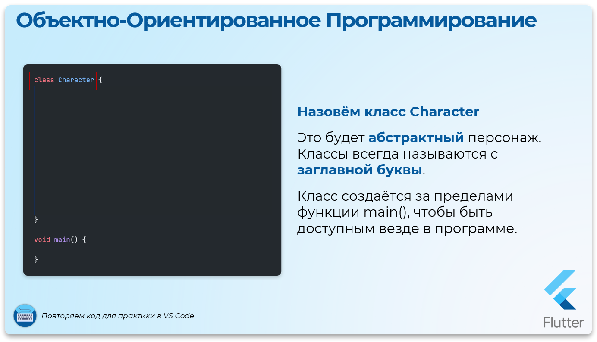
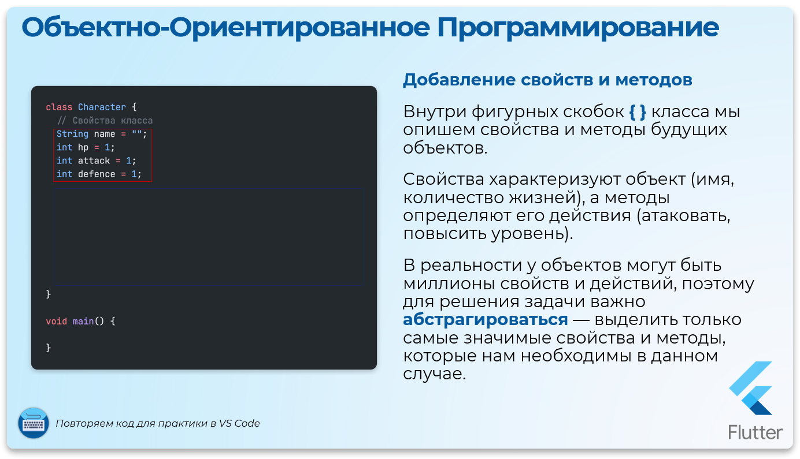
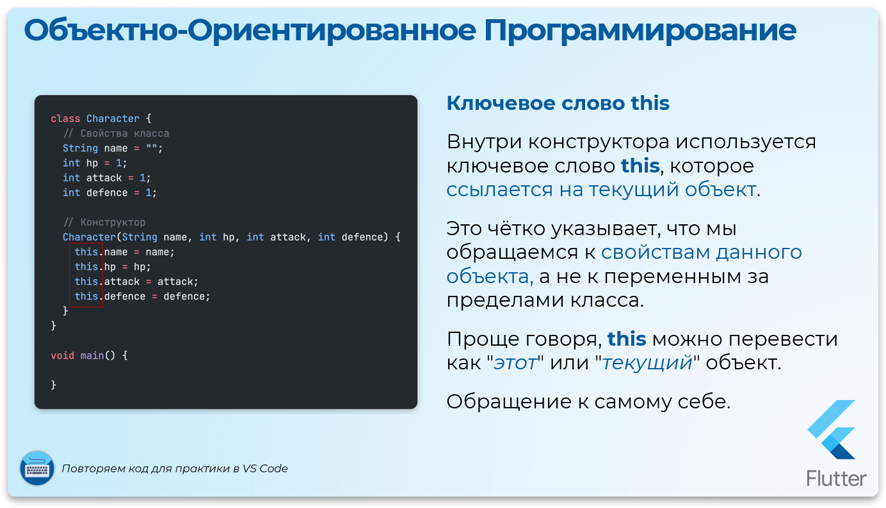
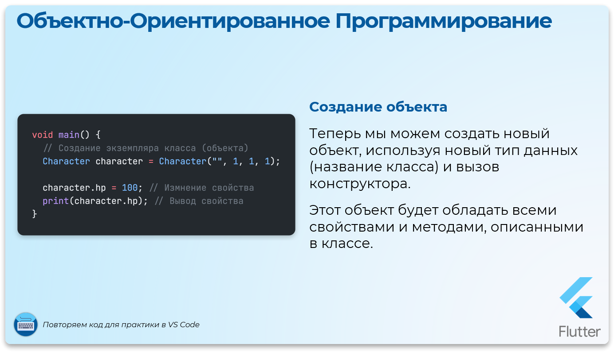
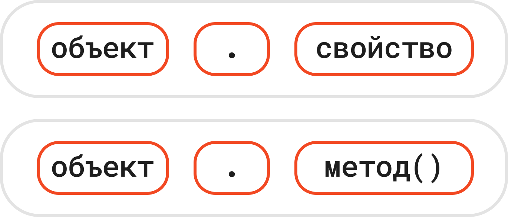
1. Создание класса
Первым шагом мы должны создать класс, который станет основой для создания объектов. Класс можно рассматривать как шаблон или трафарет, который определяет общие свойства и действия для всех объектов одного типа.
2. Назовём класс Character
Этот будет абстрактный персонаж. Классы всегда называются с заглавной буквы. Класс создаётся за пределами функции main(), чтобы быть доступным везде в программе.
3. Добавление свойств и методов
Внутри фигурных скобок { } класса мы опишем свойства и методы будущих объектов. Свойства характеризуют объект (например, имя, количество жизней), а методы определяют его действия (например, атака, защита).
4. Параллель с реальной жизнью
Чтобы лучше понять, представьте, что вокруг нас множество объектов: люди, автомобили, здания.
У любого объекта есть 2 важные характеристики (например для человека):
Свойства - возраст, рост, цвет глаз, вес, ...
Действия - учиться, спать, работать, играть в зельду ...
В реальности у объектов могут быть миллионы свойств и действий, поэтому для решения задачи важно абстрагироваться - выделить только самые значимые свойства и методы, которые нам необходимы в данном случае.
5. Добавляем свойства персонажа
В данном случае мы определим такие свойства, как имя, количество жизней, сила атаки и уровень защиты. При этом каждому из них установим значения по умолчанию, соответствующие базовому случаю.
6. Создание конструктора класса
Для удобства работы с классом необходимо добавить конструктор. Это специальный метод, который автоматически вызывается при создании объекта. Его имя совпадает с именем класса. В конструкторе мы перечисляем параметры, которые нужно указать при создании объекта, а затем инициализируем свойства значениями этих параметров.
7. Ключевое слово this
Внутри конструктора используется ключевое слово this, которое ссылается на текущий объект. Это необходимо, чтобы чётко указать, что мы обращаемся к свойствам данного объекта, а не к переменным или значениям из внешней области видимости. Проще говоря, this можно перевести как "этот" или "текущий" объект. Обращение к самому себе.
8. Создание объекта
Теперь мы можем создать новый объект, используя новый тип данных (название нашего класса) и вызов конструктора. Этот объект будет обладать всеми свойствами и методами, описанными в классе.
Создание и использование объектов
Dart - Создание объекта
void main() {
// Создание экземпляра класса (объекта)
Character character = Character("", 1, 1, 1);
character.hp = 100; // Измнение свойства
print(character.hp); // Вывод свойства
}Для создания нового экземпляра класса (новый объект), мы сначала указываем тип данных (имя класса), затем задаём имя объекта, а после этого вызываем конструктор класса, чтобы инициализировать свойства нового объекта.
После этого у нас есть полностью готовый объект со своими уникальными свойствами. Чтобы обратиться к свойствам или методам объекта, используется точечный синтаксис. Например, мы можем узнать текущее значение свойства, вызвать метод объекта, или даже изменить значение свойства.
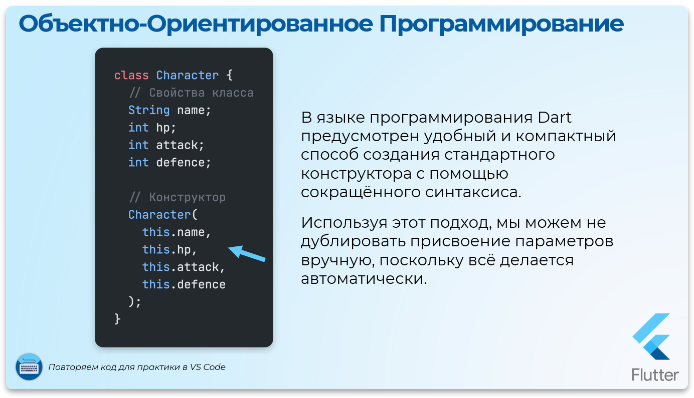
В языке Dart предусмотрен более удобный и компактный способ создания стандартного конструктора с помощью сокращённого синтаксиса. Используя этот подход, мы можем не дублировать присвоение параметров вручную, поскольку всё делается автоматически.
Dart - Сокращённый конструктор
class Character {
// Свойства класса
String name;
int hp;
int attack;
int defence;
// Конструктор
Character(this.name, this.hp, this.attack, this.defence);
}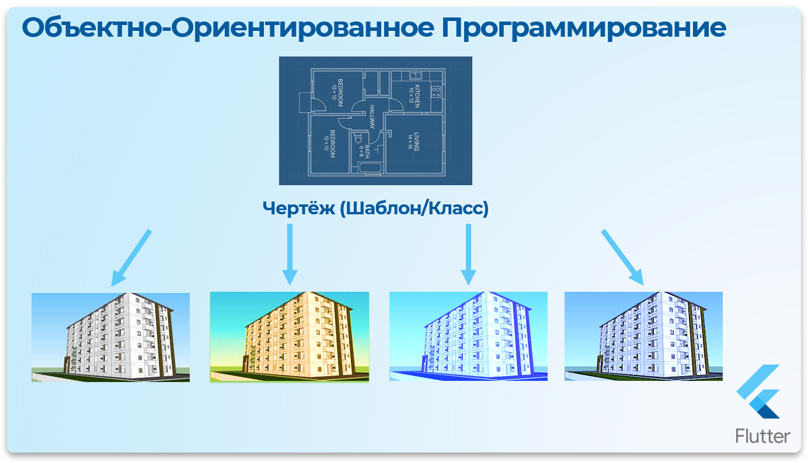
Множественные объекты из одного класса
Одно из главных преимуществ ООП — это возможность создавать множество уникальных объектов, используя один и тот же класс как основу.
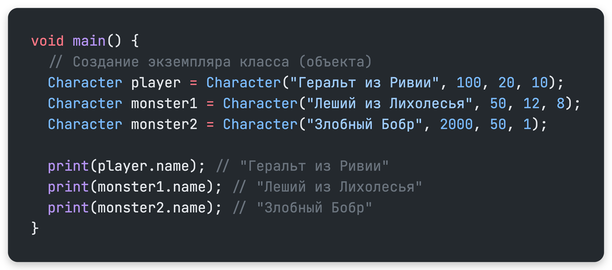
Класс выступает в роли шаблона, который определяет общую структуру (свойства и методы), а каждый объект, созданный на его основе, может иметь собственные данные и поведение.
Dart - Создание множественных объектов
void main() {
// Создание экземпляра класса (объекта)
Character player = Character("Геральт из Ривии", 100, 20, 10);
Character monster1 = Character("Леший из Лихолесья", 50, 12, 8);
Character monster2 = Character("Злобный Бобр", 2000, 50, 1);
print(player.name); // "Геральт из Ривии"
print(monster1.name); // "Леший из Лихолесья"
print(monster2.name); // "Злобный Бобр"
}Мы создали три разных объекта, используя единственный шаблон класса Character
Это наглядно демонстрирует удобство и гибкость объектно-ориентированного программирования.
Уникальные свойства объектов
Каждый объект — player, monster1, monster2 — обладает одинаковым набором свойств, например, name. Однако самое важное — у каждого из этих объектов значение свойства name уникально. Это позволяет хранить уникальную информацию для каждого объекта и работать с ними независимо.
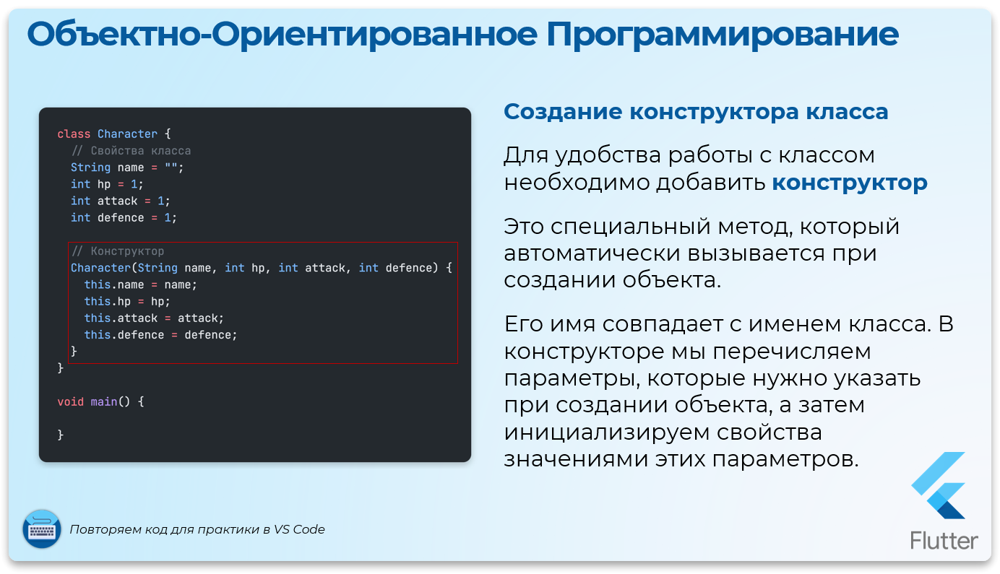
Связь с this
Когда мы вызываем конструктор класса для создания нового объекта, ключевое слово this внутри класса автоматически связывается с этим объектом.
Проще говоря, this обозначает текущий объект, для которого выполняется код.
Если в конструкторе класса написано:
this.name = name;И создаётся объект player, то это выражение становится:
player.name = name;А если создаётся объект monster1, то оно трансформируется в:
monster1.name = name;Таким образом, this автоматически заменяется текущим объектом, что делает создание и управление объектами простым и логичным.
Добавление методов к классу
Добавим методы для вывода информации о персонаже
Создадим метод displayInfo, который будет выводить основные характеристики объекта, такие как имя, здоровье, атака и защита.
После создания объекта мы можем вызвать его метод, используя точечный синтаксис. Обязательно ставьте круглые скобки после имени метода, как при вызове обычной функции.
Свойство объекта – вызывается через точку и без скобок
Метод объекта – вызывается через точку и со скобками

Методы позволяют делать объекты более «живыми» и взаимодействующими с данными.
Это один из ключевых аспектов работы в стиле ООП.
Dart - Класс с методами
class Character {
// Свойства
String name;
int hp;
int attack;
int defence;
// Конструктор
Character(this.name, this.hp, this.attack, this.defence);
// Методы
void showStats() {
print("Имя: $name");
print("Здоровье: $hp");
print("Атака: $attack");
print("Защита: $defence");
}
}
void main() {
// Создание экземпляра класса (объекта)
Character player = Character("Геральт из Ривии", 100, 20, 10);
Character monster1 = Character("Леший из Лихолесья", 50, 12, 8);
Character monster2 = Character("Злобный Бобр", 2000, 50, 1);
player.showStats();
monster1.showStats();
monster2.showStats();
}Теперь наш код стал структурированным и логичным, ведь все свойства и методы объекта объединены в одном месте — внутри класса. Такой подход не только делает код аккуратным, но и предотвращает путаницу, поскольку все элементы связаны по смыслу и удобно «упакованы».
Преимущества, которые мы получили:
-
Связанность данных и функций: Все свойства и методы, относящиеся к одному объекту, находятся внутри его класса, а не разбросаны по коду. -
Изоляция данных: Мы чётко определяем, к какому объекту относятся те или иные свойства и методы. Теперь невозможно случайно «перепутать» данные одного персонажа с данными другого. -
Легкость масштабирования: Для создания нового объекта достаточно использовать класс, без необходимости копирования кода.
Полный пример с боевой системой
Добавим остальные методы из процедурного примера
Dart - Полный класс Character
class Character {
// Свойства
String name;
int hp;
int attack;
int defence;
// Конструктор
Character(this.name, this.hp, this.attack, this.defence);
// Методы
void showStats() {
print("Имя: $name");
print("Здоровье: $hp");
print("Атака: $attack");
print("Защита: $defence");
}
void dealDamage(Character target) {
int damage = attack - target.defence;
if (damage < 0) damage = 0;
target.hp -= damage;
if (target.hp <= 0) {
print("${target.name} проиграл");
} else {
print("$name наносит ${target.name} $damage урона. У ${target.name} осталось ${target.hp} HP.");
}
}
void levelUp() {
print("Поздравляем, $name! Уровень повышен! Ваши статы усилены!");
hp += 10;
attack += 5;
defence += 2;
}
}
void main() {
// Создание экземпляра класса (объекта)
Character player = Character("Геральт из Ривии", 100, 20, 10);
Character monster1 = Character("Леший из Лихолесья", 50, 12, 8);
Character monster2 = Character("Злобный Бобр", 2000, 50, 1);
// Выпускаем кракена
player.dealDamage(monster1);
player.dealDamage(monster1);
monster1.dealDamage(player);
player.dealDamage(monster1);
player.dealDamage(monster1);
player.dealDamage(monster1);
player.levelUp();
player.showStats();
}Результат выполнения:
Геральт из Ривии наносит Леший из Лихолесья 12 урона.
У Леший из Лихолесья осталось 38 HP.
Геральт из Ривии наносит Леший из Лихолесья 12 урона.
У Леший из Лихолесья осталось 26 HP.
Леший из Лихолесья наносит Геральт из Ривии 2 урона.
У Геральт из Ривии осталось 98 HP.
Геральт из Ривии наносит Леший из Лихолесья 12 урона.
У Леший из Лихолесья осталось 14 HP.
Геральт из Ривии наносит Леший из Лихолесья 12 урона.
У Леший из Лихолесья осталось 2 HP.
Леший из Лихолесья проиграл
Поздравляем, Геральт из Ривии! Уровень повышен! Ваши статы усилены!
Имя: Геральт из Ривии
Здоровье: 108
Атака: 25
Защита: 12